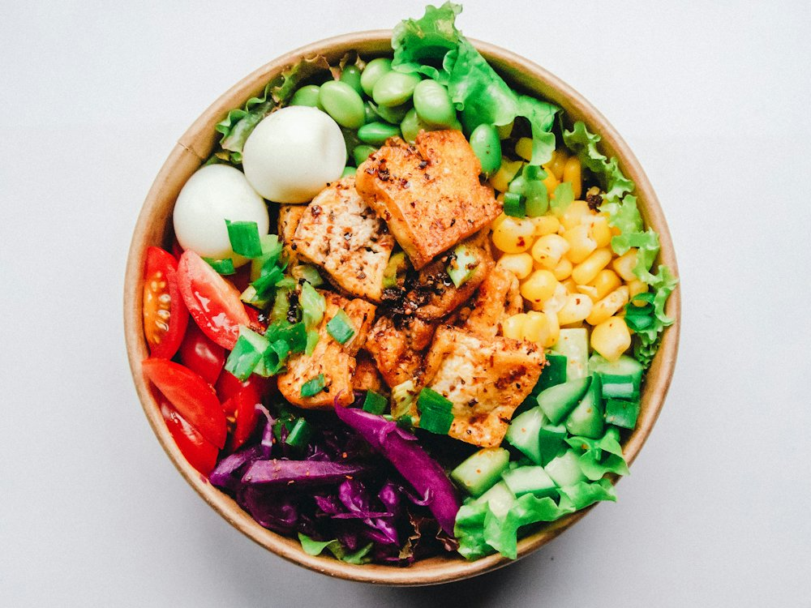

Vista
Ресторан · Средиземноморская · Алматы
Рейтинг
★ 4.9
709 оценок
Год открытия
2013
в отеле The Ritz-Carlton, открытом в 2013 г.
Средний чек
≈12 000 ₸
оценка по типу заведения
Адрес и часы
📍 БЦ Esentai Tower, пр. Аль-Фараби, 77/7, 30 этаж, Алматы · Бостандыкский район
🕒 часы работы уточняются — смотрите в 2ГИС
О заведении
Ресторан The Ritz-Carlton на 30-м этаже.
Меню
Рядом в справочнике
Villa dei Fiori · Vinil Bar · Violet · VITA DONNER · Voronka · WASABI food